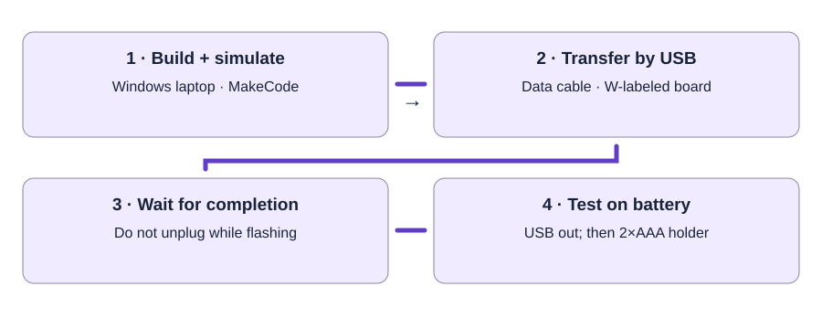

micro:bit USB transfer video
Official support demonstration of copying a compiled .hex to the MICROBIT drive. The screens may look older; use the current MakeCode instructions when menus differ.
Open video / illustrated lesson →Mentor preparation · Thursday, September 24
Prepare Windows laptops, matched Wearables kits, and a three-button MakeCode starter students can modify and test.
| Part | Per active workstation | Before students arrive |
|---|---|---|
| micro:bit V2 | One W-labeled board | Keep R-labeled Hummingbird boards in Robotics; those retain BirdBrain firmware. |
| Windows laptop | One per student or pair | Open MakeCode and the tested starter; verify the browser and USB port. |
| USB data cable | One matching labeled cable | A charging-only cable will not transfer a program. Stage a known-good spare. |
| Battery holder | One matching 2×AAA micro:bit holder | Use fresh matched cells; disconnect while using USB in this classroom workflow. |
| Storage and backup | Matching bag; spare cable, board, and laptop | Keep screenshots and a mentor-downloaded .hex file available for network problems. |
Use the student guide at each laptop and an iPad for evidence. The number of tested, supervised workstations sets capacity.
Product/reference photos, not our delivered inventory. Tap a photo to enlarge it. Compare the actual labels and kit list; appearance alone does not confirm electrical compatibility. These optional photos stay out of printouts.

Small board with A/B buttons, LED display, and gold edge pads. Keep W and R kit labels with their assigned boards.
Photo: Adafruit
Reference bundle shows board, micro-USB cable, and holder for two AAA cells. Compare with the delivered Club Kit.
Photo: Adafruit
Large USB-A end and small micro-USB end. Appearance cannot prove data support; test transfer with the actual cable.
Photo: BirdBrain / CreXoUse A → heart · B → happy face · A+B → clear. The initial clear-screen block also gives a predictable restart. Students change one icon and test again.

In a new MakeCode project, choose JavaScript, replace the existing code with this starter, then choose Blocks. The .ts download is source text; use MakeCode’s Download button to produce the .hex for a physical board.
input.onButtonPressed(Button.A, function () {
basic.showIcon(IconNames.Heart)
})
input.onButtonPressed(Button.B, function () {
basic.showIcon(IconNames.Happy)
})
input.onButtonPressed(Button.AB, function () {
basic.clearScreen()
})
basic.clearScreen()

Official support demonstration of copying a compiled .hex to the MICROBIT drive. The screens may look older; use the current MakeCode instructions when menus differ.
Open video / illustrated lesson →Current illustrated guidance for direct browser transfer and the file-copy alternative.
Open MakeCode USB instructions →Practice the event structure. Our classroom starter uses a heart, happy face, and A+B clear; retain those review behaviors for Thursday.
Open MakeCode Smiley Buttons →| Minutes | Action | Pass condition |
|---|---|---|
| 0–5 | Match W kit labels; identify buttons, display, and reset. | Student names an input and an output. |
| 5–9 | Open the prepared starter and run the simulator. | All three events behave correctly. |
| 9–14 | Change one icon and repeat the simulator checks. | Student predicts the change. |
| 14–19 | Transfer to the assigned board and wait. | Correct physical board receives the program. |
| 19–22 | Test on battery, including reset. | Simulator and real behavior agree. |
| 22–25 | Save blocks screenshot, board photo, and explanation; power off. | “When I press ___, the micro:bit ___.” |
| Symptom | Next check |
|---|---|
| No MICROBIT drive | Reseat the data cable; try the tested spare cable or another laptop port. |
| Simulator changes, physical board does not | Repeat the transfer to the matched kit; verify the compiled .hex reached MICROBIT. |
| Transfer still flashing | Wait; do not unplug. Get the technical lead if it continues unusually long. |
| Works on USB only | After disconnecting USB, check holder plug, cell direction, and fresh matched cells. |
| Robotics initials or the wrong board | Stop and return it to Tri. Do not overwrite BirdBrain firmware or swap pools. |
| Internet unavailable | Use the previously opened editor/offline backup; demonstrate on the preloaded board and record what students actually tested. |
Print this guide for the station lead and the existing micro:bit station card. Use the shared opening/closing sheet to record readiness.